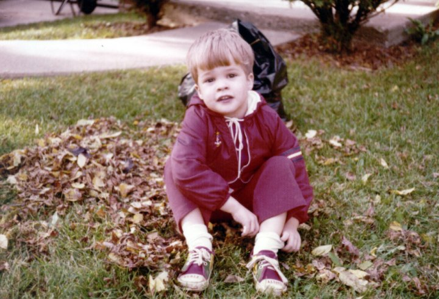
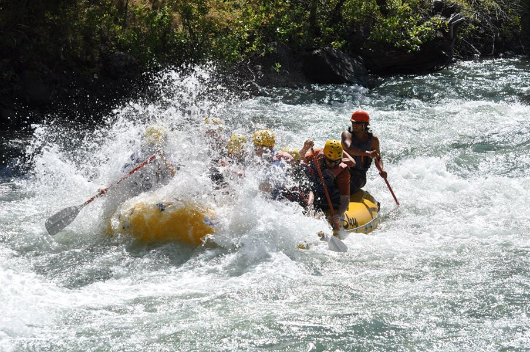
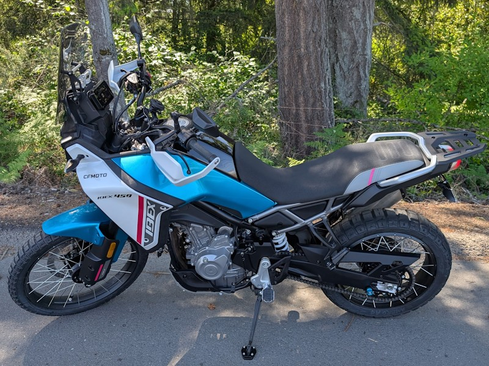

Hi! 👋🏼
I was a professional software developer from 1993 to 2022, though I've spent a lot of free time writing code, too. I've lived and worked in many places in the United States, including Michigan (where I grew up), Massachusetts, Colorado, and Washington State where I reside now. I've visited all 50 states, and a dozen countries.
Some of the things I worked on, you've never heard of, because I spent a lot of time doing startups and small companies. I did have a couple stretches working on things you might've heard of, though: ASP.NET MVC and Dynamic Data, Enterprise Library, CodePlex, Visual Studio App Center, and most recently GitHub. I've also been involved in open source; I am the primary maintainer of xUnit.net, a unit testing framework for .NET developers (since 2007). Mostly, though, I'm a lazy bum (aka, retired). It's pretty enjoyable.
In my personal life, I am someone who consumes and occasionally produces music (mostly guitar, piano, and singing). I love playing games, especially board games, card games, and video games. I spend my outdoor time split between being on the water in a kayak or a raft, and on the road on my motorcycle.
Thanks for stopping by!
  